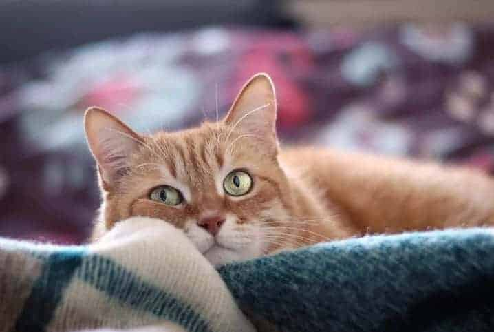

Não é difícil perceber quando um gatinho está feliz ou relaxado, pois os comportamentos demonstram claramente um estado de tranquilidade. Nas situações em que o animal está assim, é muito comum que ele pisque os olhinhos de maneira repetida e lenta, chegando a fechá-los em certos momentos. 
As piscadas feitas enquanto ele observa o tutor são outro indicativo positivo, que demonstra apreço pela pessoa. Um bom jeito de interpretar essa ação é imaginá-la como uma espécie de sorriso ou “beijinhos” para você. Além disso, as orelhas costumam estar voltadas para a frente, podendo ocorrer do bichano mostrar a barriga para você. Porém, é preciso cautela, pois isso não significa que ele está pedindo carinho na região. Esse comportamentofelino indica apenas que ele está feliz e tranquilo a ponto de expor uma área vulnerável.
Outra demonstração de felicidade e, muitas vezes, de vontade de brincar na linguagem corporal do gato é quando o peludo está com as pupilas levemente dilatadas, assumindo um formato redondo nos olhos. O rabo geralmente se apresenta voltado para cima, um pouco dobrado na ponta, e as orelhas, para frente.
Mais uma vez, a cauda é muito importante para você detectar os momentos em que seu amigo de bigodes está em alerta. Nesses casos, além de manter o rabo em pé, as orelhas ficam totalmente para trás.
Se ele faz isso ao mesmo tempo em que dobra as patas traseiras, como se estivesse agachado, é um sinal de que está avaliando algo. Um exemplo no qual se observa esse tipo de postura é quando ele está prestes a dar o bote em uma presa ou durante uma brincadeira.
Em circunstâncias que exigem ainda mais atenção do gato, e ele fica com medo, os pelos podem ficar eriçados. Normalmente, ele se rebaixa com todas as patas, se encolhe e esconde a cauda.
Uma atitude mais agressiva no comportamento do gato, que pode indicar que o felino se sente ameaçado ou estressado, costuma vir acompanhada de pupilas bem dilatadas, além de rabo e pelos bastante arrepiados.
mais estressados ele fica, mais tenta parecer maior. Isso faz com que assuma uma postura arqueada, projetando as costas para cima. É a típica imagem do “gato de Halloween”.
O nervosismo também está presente quando as orelhas do bicho ficam para o lado, e a cauda fica por dentro das patas traseiras. Fique atento a esses sinais corporais dos gatos, pois o bigodudo pode atacar para se defender ao se aproximarem dele em situações assim.